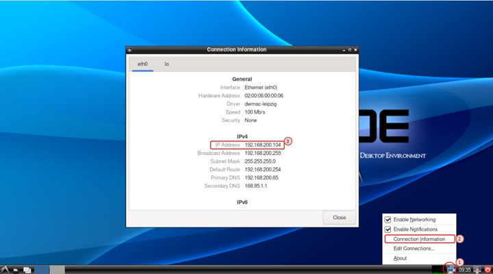

Remote Control of KNEO Pi¶
In many scenarios, you may need to access your KNEO Pi without a monitor, keyboard, or mouse. For example, the KNEO Pi might be installed in a remote or difficult-to-reach location, or you simply don’t have a spare monitor available.
For application development, remote control via network access is highly recommended. This method allows you to:
- Easily download libraries, tools, and packages from the internet.
- Leverage your PC's computational power for tasks like cross-compiling.
- Manage and develop projects more efficiently, reducing the constraints of the KNEO Pi’s onboard resources.
SSH provides command-line access for lightweight and efficient terminal management, while VNC delivers a full graphical desktop interface for users who prefer a visual approach.
Follow the steps in this guide to set up and use the method that best suits your needs.
Find the IP address¶
To connect to your KNEO Pi remotely using SSH or VNC, you first need to know its local IP address. This is the unique address assigned to the KNEO Pi by your Local Area Network (LAN).
If you have a display connected to your KNEO Pi, identifying the IP address is straightforward. However, if you're working without a monitor, there are several ways to find it from another machine on the same network.
Choose one of the methods below to locate the local IP address of your KNEO Pi.
Using the Desktop GUI¶

- Right-click on the network icon in the system tray.
- Select Connection Information from the menu.
- A window will appear showing details about your current network connection, including the IP address of your KNEO Pi.
This method is quick and straightforward if you have access to the KNEO Pi’s desktop environment.
Hardware Connection Reference
For local access usage with a monitor and keyboard connected to the KNEO Pi, or see headless access usage with TTL cable connected.
Using ifconfig command¶
- Open a terminal on the KNEO Pi.
- Run the following command:
- Look for the inet entry under the active network interface (e.g.,
eth0orwlan0) for the assigned IP.
Using nmcli command¶
You can use the built-in Network Manager CLI (nmcli) to retrieve network details. Follow these steps:
- Open a terminal on the KNEO Pi.
- Run the following command:
-
The output will display information for all network interfaces available on your KNEO Pi.
- Locate the GENERAL.TYPE row to identify the type of network interface.
For example, the ethernet block refers to the Ethernet port. - Find the IP4.ADDRESS[1] field within the relevant block to see the IPv4 address. You can ignore the trailing slash and number (e.g., /24).
For example, if your KNEO Pi uses an Ethernet connection, check the block where GENERAL.TYPE reads ethernet and note the address under IP4.ADDRESS[1]. This IPv4 address is what you’ll use to access the device.
- Locate the GENERAL.TYPE row to identify the type of network interface.
Resolve kneo-pi.local with mDNS¶
KNEO Pi OS supports multicast DNS (mDNS) through the Avahi service, enabling hostname resolution within the local network.
If your host PC also supports mDNS, you can access the KNEO Pi using its default hostname and the .local suffix. By default, the hostname for a fresh KNEO Pi OS installation is kneo-pi. To resolve the IP address, use the following command from your host PC:
For example, if the KNEO Pi is reachable, ping from your Host PC will show the IP address:
$ ping -c 1 kneo-pi.local
PING kneo-pi.local (192.168.1.100) 56(84) bytes of data.
64 bytes from 192.168.1.100 (192.168.1.100): icmp_seq=1 ttl=64 time=0.394 ms
192.168.1.100 shown above is the resolved IP.
Not working if your local network has more than one KNEO Pi
The hostname of the device booted later may automatically change, causing this method to fail. In such cases, use alternative methods.
Checking Your Network Router or Switch¶
- Many network routers or managed switches display a list of connected devices, including their IP addresses.
- Check your router’s administration page and look for the KNEO Pi’s IP in the device list.
Using nmap from Your Host PC¶
- Use the
nmaptool download on your host PC to scan your network for connected devices: Replace 192.168.1.0/24 with your local network range. Look for the KNEO Pi in the scan results.
Connecting to KNEO Pi with SSH¶
By default, KNEO Pi OS disables the SSH server. Once you have the IP address, follow these steps to connect via SSH:
- Open a terminal on your host PC.
- Use
sshcommand to establish an SSH connection: Accept the SSH key if prompted (this happens the first time you connect to a new device). - Enter the password. See local access usage page for the password.
- You should now be remotely connected to your KNEO Pi and can control it from your host PC terminal.
Access with username root is disabled
By default, if you have not created a new user account manually, alarm. For security reasons, SSH and SCP connections as root are disabled. After logging in, you can switch to the root user using the su command.
Connecting to KNEO Pi with VNC¶
By default, KNEO Pi OS disables the SSH server. Once you have the IP address, follow these steps to connect via VNC:
- Open the VNC viewer on your host PC.
- Enter the KNEO Pi’s IP address
- you should now see the KNEO Pi desktop environment on your host PC.
VNC viewer options
To connect to KNEO Pi via VNC, you’ll need a VNC viewer on your host PC. Here are a few popular options:
- TigerVNC Viewer
- RealVNC Viewer
Transferring Files with SCP¶
The Secure Copy Protocol (SCP) allows you to transfer files over SSH, enabling secure file copying between your KNEO Pi and another computer. Below is a guide to using scp for various file transfer scenarios. To use scp, find your KNEO Pi’s IP address first.
Copying Files to Your KNEO Pi¶
To copy a file from your host to a specific directory of your KNEO Pi, simply add the directory path after the : in the scp command. Note that the target directory must already exist, as scp does not create directories automatically.
For example, the following command transfers a file named myfile.txt into the project/ directory within the alarm’s home folder:
Copying Files from Your KNEO Pi¶
To transfer files from your KNEO Pi to another computer, simply reverse the source and target paths in the scp command.
For example, the following command copies a file named myfile.txt from the project/ directory under alarm's home folder on your KNEO Pi to the current directory on your local machine:
Synchronise folders between computers with rsync¶
You can use the rsync utility to synchronize folders between your KNEO Pi and another computer efficiently. For example, you can automate the transfer of files such as logs, images, or data generated by your KNEO Pi.
Before proceeding, ensure you know the following details:
KNEOPi_IP: find your KNEO Pi’s IP address.username: The username used to log in to your KNEO Pi (typicallyalarmunless you have created a custom user).remote_folder: The directory on your KNEO Pi that contains the files to be synchronized.local_folder: The directory on your personal computer where the files will be stored.
Steps:
-
Create the Local Folder on Your PC
On your personal computer, create the destination folder for synchronization using the mkdir command: -
Synchronize Files Using
rsync
Run the following command to synchronize files from the KNEO Pi to your local computer:Explanation of the Options
-a: Archive mode to preserve file permissions and attributes.
-v: Verbose mode for detailed output.
-z: Compress data during transfer to save bandwidth.
-e ssh: Use SSH for secure data transfer.This command transfers all files from the specified folder on your KNEO Pi to the designated folder on your computer. If run again, rsync only updates new or modified files, making subsequent synchronizations faster and more efficient.
-
Automate Updates
If you modify or delete files in the source folder on the KNEO Pi, running the samersynccommand ensures the changes are reflected on your personal computer.